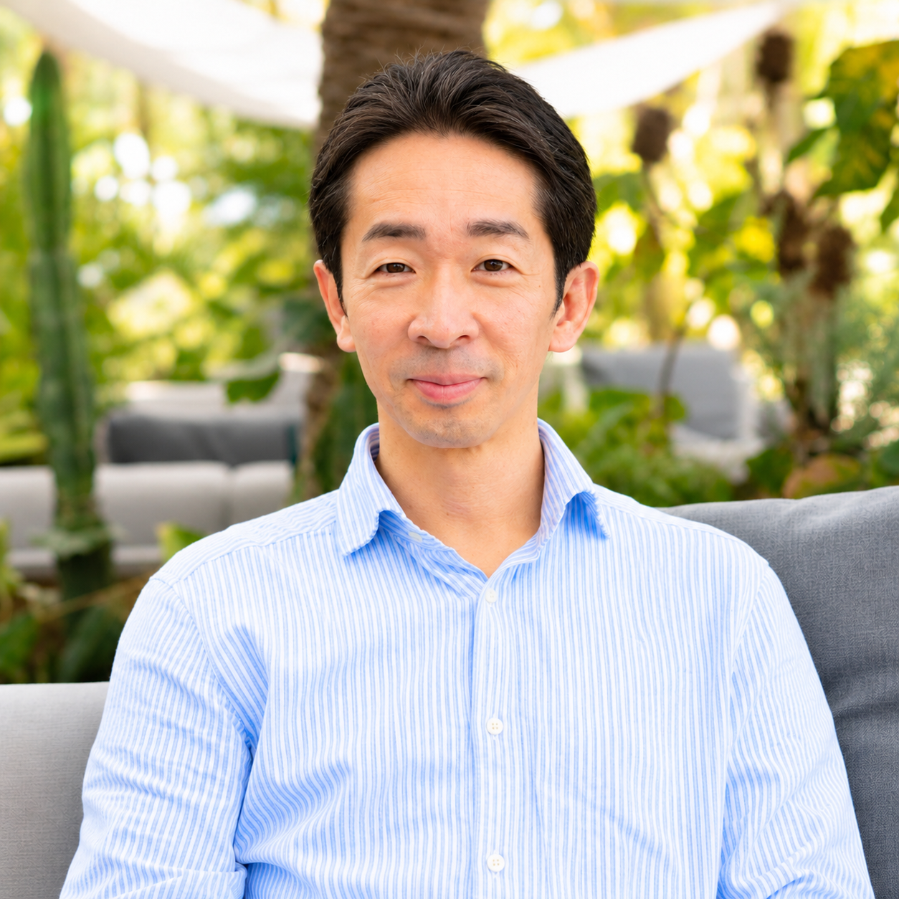

自然体
自分を偽らず、ありのままの自分を受け入れる。他人の評価や期待にとらわれず、自分の心を大切にします。
一人の変化から、社会に新しい循環を。
SCROLL01 — PHILOSOPHY
日々の暮らしの中で、他人の期待や社会の価値観に影響され、自分の本当の気持ちを見失ってしまうことがあります。
Natural Lifeは、自分自身と向き合い、心・体・魂を整えながら、本来の自分らしい生き方を見つけていくことを大切にしています。
無理に自分を変える必要はありません。誰かと比べる必要もありません。自分の本音に気づき、自分にとって本当に必要なものを、自分で選んでいく。
一人ひとりが自然体で生きることから、家族、仲間、仕事、地域、そして社会へ。良い循環が広がっていくことを目指しています。
自分を偽らず、ありのままの自分を受け入れる。他人の評価や期待にとらわれず、自分の心を大切にします。
心・体・魂のバランスを整え、自分自身と周囲との調和を大切にします。
自分を大切にしながら人とのつながりを尊重し、互いに支え合う良い循環を生み出します。
売らない。押しつけない。自分に必要なものを、自分で選ぶ。
03 — PROFILE

Natural Life 主宰
私はこれまでの人生を通じて、自分らしく生きることの大切さについて考えてきました。
他人の評価や期待を気にする生き方から、自分の心を大切にする生き方へ。お金や成功を中心に考える生き方から、心の豊かさを大切にする生き方へ。頑張ることや無理をすることを当たり前にするのではなく、自然体で生きることへ。
人の心と向き合う中で、人は自分でも気づかない思い込みや心のブロックを抱えていること、本当にやりたいことがあるのに自ら可能性に制限をかけていることがあると感じてきました。
自分の本音に気づいた瞬間、人は変わり始めます。一人ひとりが自分自身の可能性に気づき、自分で選択し、自分らしい人生を歩んでいくことを大切にしています。
誰かに何かを押しつけるのではなく、その人自身の気づきと選択を尊重する。その人の人生に寄り添う伴走者でありたいと考えています。
Natural Lifeを通じて、自分らしく生きる人が増え、その変化が周囲や社会にも良い循環として広がっていくことを目指しています。
04 — WHAT WE DO
今のあなたに必要なものを、あなた自身のペースで。
SERVICE 01
自分自身の内面と向き合い、思い込みや心のブロックに気づき、本来の自分らしい選択や新しい一歩をサポートします。
リーディングでは、高次元・ハイヤーセルフとつながり受け取ったメッセージをお伝えします。人生や仕事、人間関係を新しい視点から見つめ、自分の本音や可能性に気づく時間です。
SERVICE 02
心・体・魂の調和を大切にし、自分自身を整えるための学びと実践の場です。
日常生活の中で自分と向き合う時間を持ち、自分らしく生きる習慣を育みます。ワークや実践を通じて、日々の暮らしに活かせる内容をお届けします。
SERVICE 03
独自の考え方やメソッドをもとに、自分自身への気づきを深め、日常の行動や生き方につなげていく継続型プログラムです。
個別・グループ・会員向けのプログラムなどを組み合わせ、一人ひとりの成長をサポートします。
SERVICE 04
同じ価値観を大切にする人たちが集い、学び、成長していくコミュニティです。
愛・貢献・感謝を大切にし、互いの個性や考え方を尊重します。一人ひとりの変化を、周囲や社会へ良い循環として広げていきます。
05 — COMMUNITY
自分らしく生きる人たちがつながり、互いを尊重し、支え合いながら成長する。
Natural Lifeが目指すのは、共通の理念に共感する人たちが自然体でつながる場です。愛・貢献・感謝を大切に、紹介を通じて想いを分かち合い、一人ひとりの気づきと変化を育んでいきます。
LOVE ・ CONTRIBUTION ・ GRATITUDEA NOTE TO YOU
誰かと比べる必要はありません。無理に変わる必要もありません。
大切なのは、自分自身の心の声に耳を傾け、自分にとって本当に必要なものを、自分で選んでいくこと。
その小さな一歩から、新しい人生が始まります。
あなたがあなたらしく生きること。その変化が、周囲の人たちにも良い影響を広げていく。Natural Lifeは、そんな未来を大切にしています。